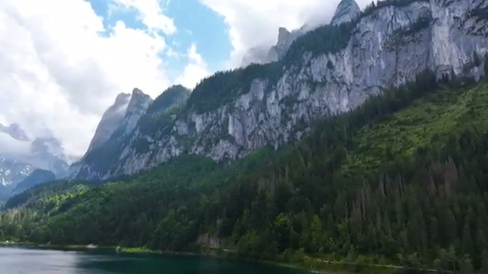
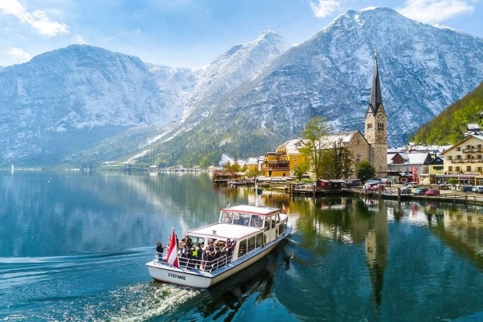
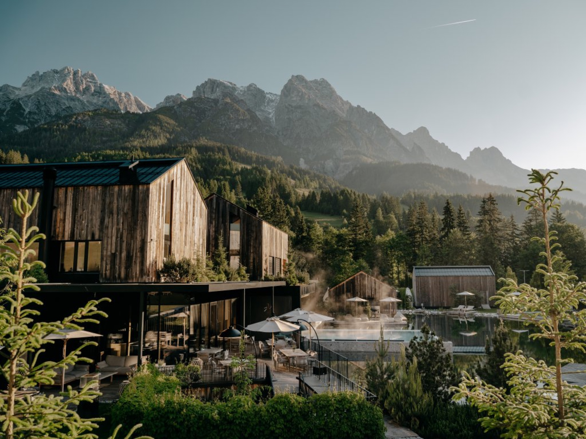
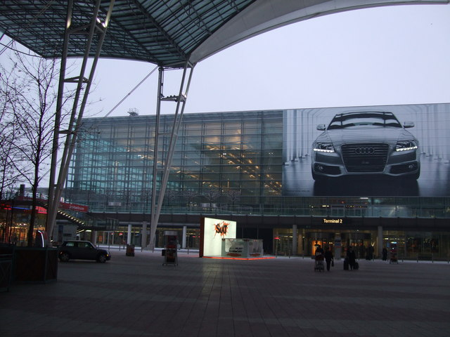
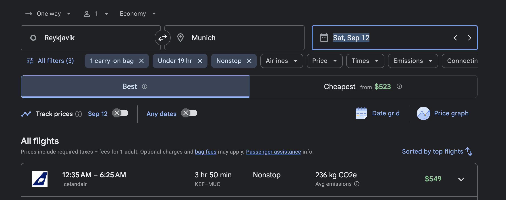

Why this version works
Two nights. One base.
St. Wolfgang earns both nights. You avoid repacking, use the waterfront for a low-effort arrival day and reach Gosausee in about an hour Sunday. Hallstatt stays optional rather than controlling the day.
Brief itinerary
Austria first, in four lines.
Day by day
Ambitious scenery, gentle pacing.
This incorporates the strongest ideas from the earlier Austria list without pretending a 6:25 a.m. arrival is a normal rested morning.

12Saturday · recovery
Munich Airport → St. Wolfgang
Land at 6:25 a.m.; eat, collect the rental and leave around 8:00. Reach St. Wolfgang around 11:00–11:30 after a family stop. Drop bags, have lunch and choose only one gentle activity: a Wolfgangsee boat ride if timing and energy align, or a stroller-friendly lakefront wander. Early dinner and sleep.
06:25 land~08:00 drive~11:15 St. WolfgangBoat or shoreline

13Sunday · priority outing
Gosausee beneath the Dachstein
Leave around 8:30 for Vorderer Gosausee. Spend two to three hours at the lake, walking only as far as conditions and energy suit. This is the best scenery-to-detour choice from the larger Austria list and the right substitute for far-west Lünersee.
~1h drive2–3h at lakeEasy shorelineLunch nearby

13Sunday · optional
Hallstatt only if everyone is thriving
Hallstatt is about 25 minutes from Gosausee and belongs on the map, but it is not required. Add a short late-afternoon visit only if weather, parking and family energy cooperate. Otherwise return to St. Wolfgang for waterfront time—the better choice after a red-eye weekend.
+25m from Gosausee1½–2h visitSkip without regretSt. Wolfgang night

14Monday · hotel
St. Wolfgang → Forsthofgut
Breakfast, check out and leave around 9:30–10:00. The drive to Leogang is approximately two hours. Arrive around lunch, park free outdoors and begin the September 14–18 reservation without a train or pickup appointment.
~10:00 depart~2h drive~12:00 LeogangFree outdoor parking

18–19Friday–Saturday
Forsthofgut → Munich Airport
Drive back September 18, return the same-airport rental that evening and stay at Hilton Munich Airport. Walk into the terminal September 19.
~2h30 driveEvening returnHilton MUCWalk to flight
Route map
Every place in the plan.
The solid route shows the September 12–14 circuit. Hallstatt is marked as optional; the dashed leg is the September 18 return to Munich Airport.
Visual booking proof
The red-eye you selected.

Cost picture
Known versus estimated.
Icelandair nonstop. Optional seats and baggage may add cost.
Earlier Alamo screenshot total; rerun with September 12 pickup and September 18 evening return.
Planning allowance for the full MUC loop. Confirm Austria permission and whether the car already carries a vignette.
One St. Wolfgang room from September 12–14, ideally with parking and a walkable waterfront location.